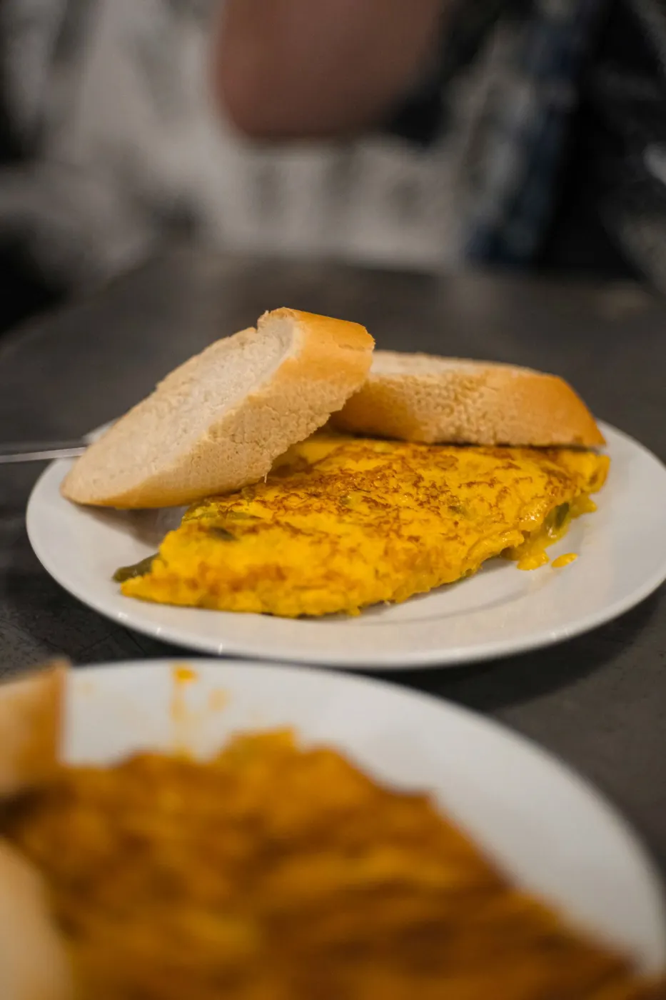
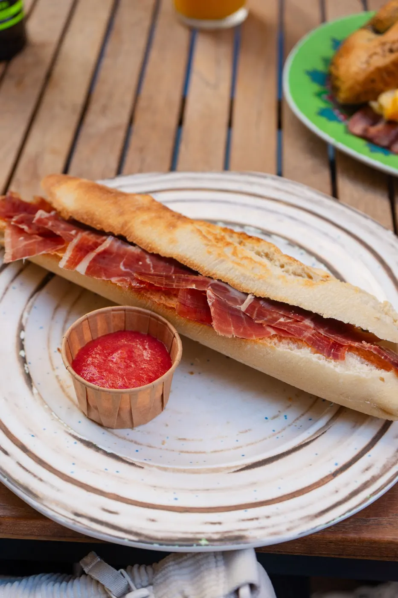
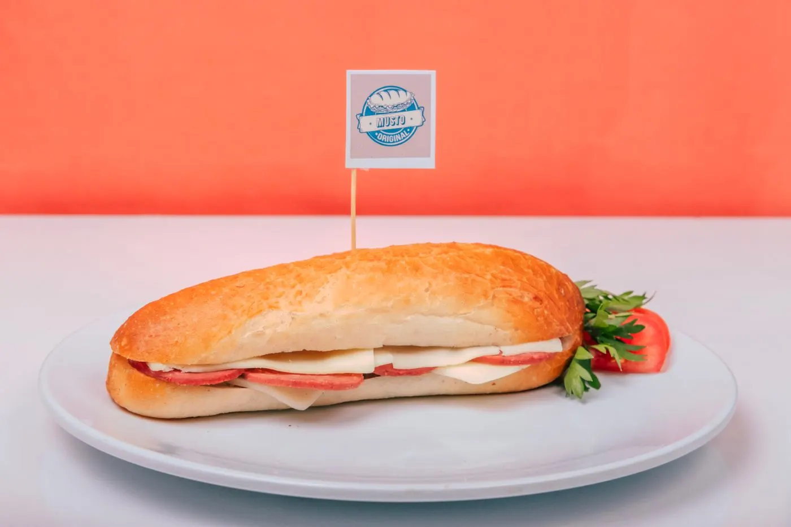

Bocadillos en Sant Andreu. El de pastrami es el más citado.
Horario: consultar por teléfono.
Bar de bocadillos; las reseñas destacan el de pastrami y mencionan a Josep. 82 reseñas con media de 4,5.
Pastrami. El bocadillo más citado.
Bocadillos. La especialidad de la casa.
Trato. Las reseñas nombran a Josep.
Resumen neutral de reseñas públicas de Google Maps. Sin citas literales.



Carrer de la Formiga, 9, 08030 Barcelona